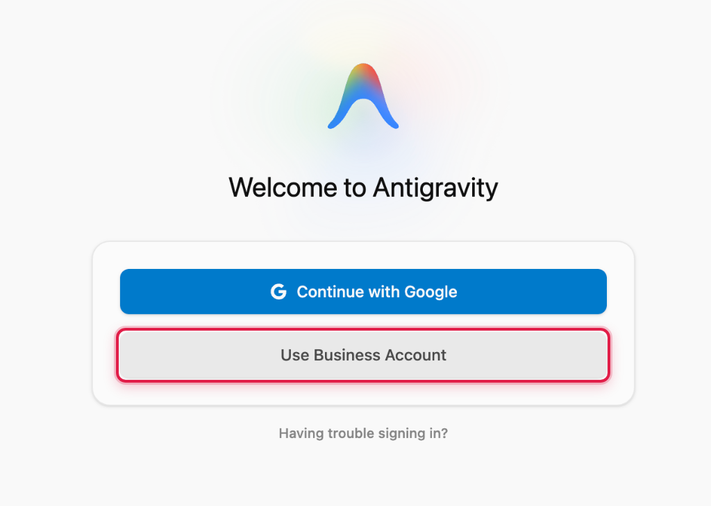
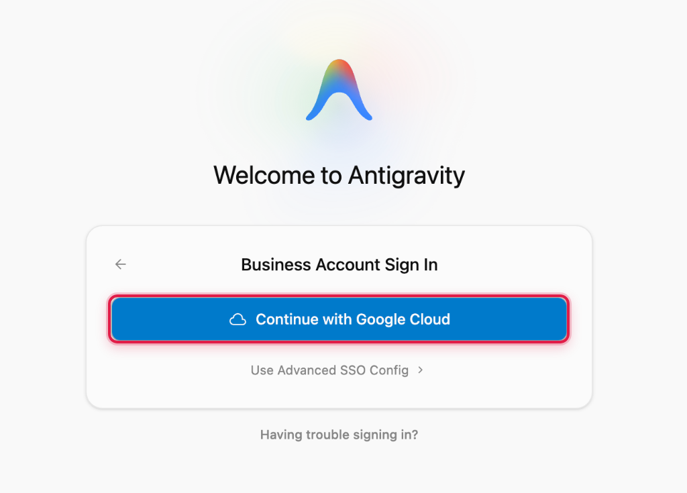
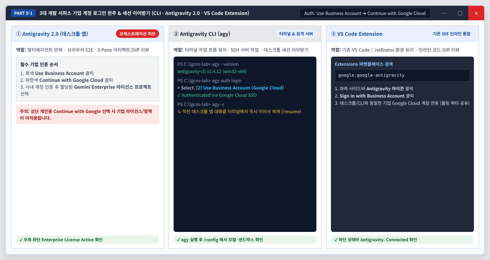
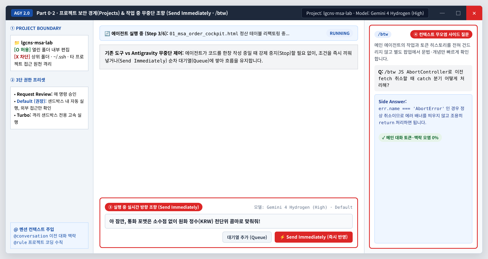
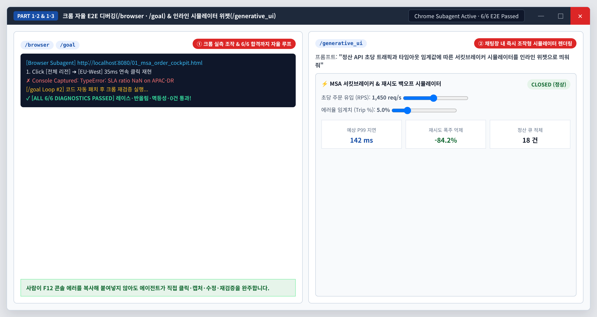
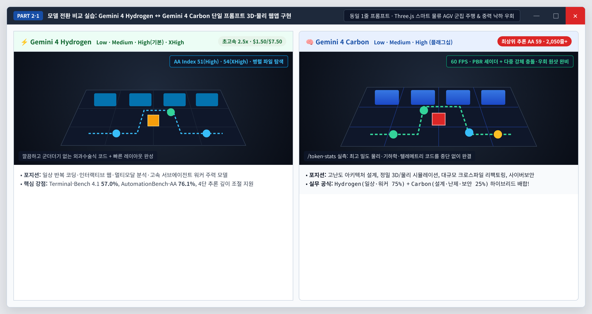
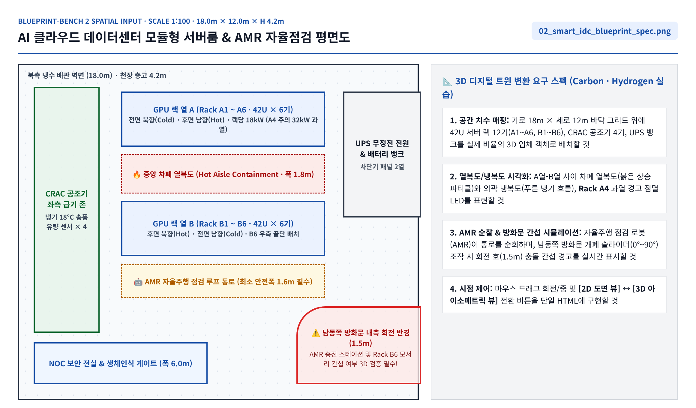
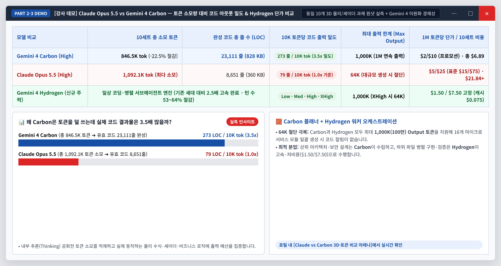
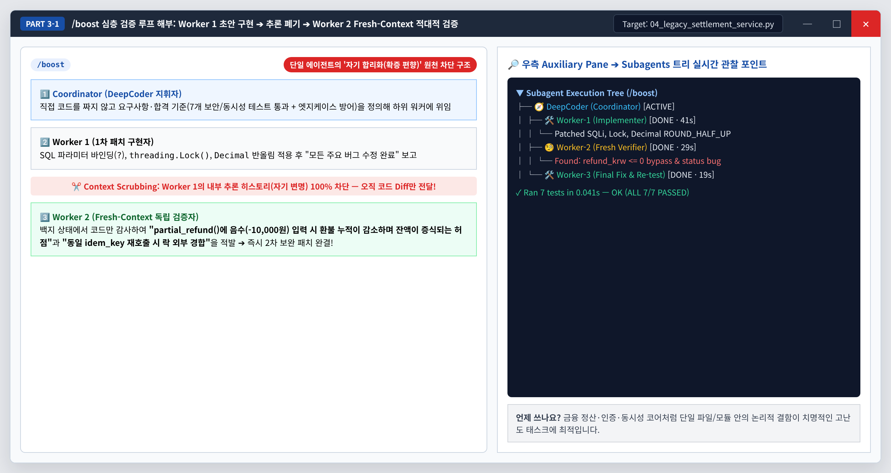
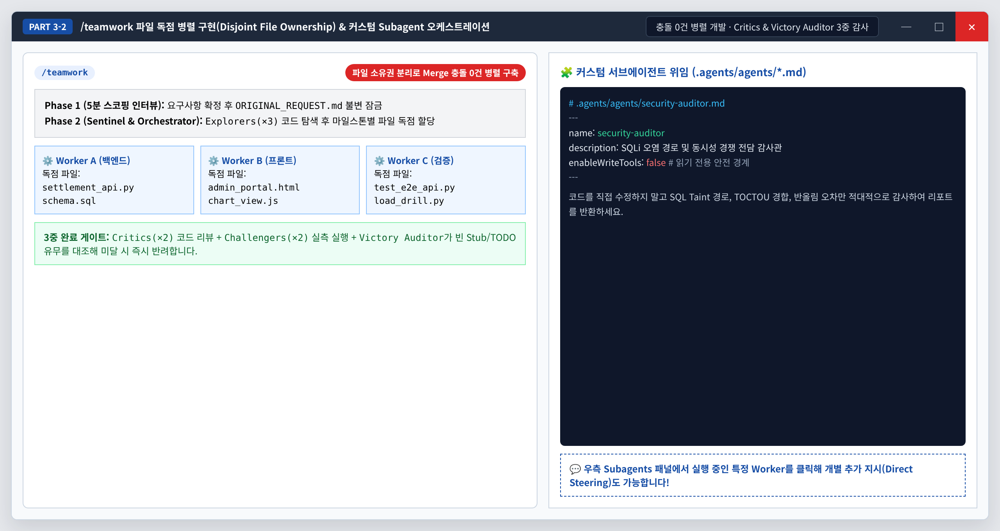

Gemini 4 (Carbon · Hydrogen) 강점 체감 & Antigravity 고유 엔지니어링 루프 실습
차세대 고속 주력 모델 Gemini 4 Hydrogen(4단 추론 깊이 Low~XHigh)과 최상위 플래그십 Gemini 4 Carbon을 직접 비교 체험하며, SI·클라우드 현업의 비동기 레이스 컨디션, 원화 정산 정밀도, 3D 디지털 트윈 공간 추론, 다문서 계약 감사, 무중단 보안 패치, 멀티에이전트 병렬 분업 및 팀 표준 플러그인 패키징까지 전 과정을 실습합니다.
| 파트 | 90분 압축 / 180분 심화 | 핵심 실습 및 데모 구성 | 대상 파일 및 주요 명령 |
|---|---|---|---|
| Part 0. 환경 세팅 & 무중단 제어 | 10분 / 20분 | 3대 서피스(AGY 2.0 · CLI · VS Code) 기업 계정 로그인 완주, 프로젝트 경계 격리, 작업 중 실시간 조향 | agy -c, Default/Turbo, Send Immediately, /btw, @conversation |
| Part 1. 설계 리뷰 ~ 브라우저 자율 루프 | 30분 / 55분 | 역질문 설계 인터뷰 ➔ 계획서 줄 단위 코멘트 ➔ 크롬 E2E 6개 진단 100% 합격 자율 루프 ➔ 인라인 부하 위젯 | 01_msa_order_cockpit.html, /grill-me, /plan, /browser, /goal, /generative_ui |
| Part 2. 모델 & 3D·벤치마크 비교 | 30분 / 60분 | 4 Hydrogen ↔ 4 Carbon 단일 프롬프트 3D AGV 비교, 공식 벤치마크 3선 프롬프팅, [데모] Claude vs Carbon 토큰 효율 |
02_smart_idc_blueprint_spec.png, 03_cloud_sla_contract.md, 04_legacy_settlement_service.py, /token-stats |
| Part 3. 멀티에이전트 & 팀 자산화 | 20분 / 45분 | Worker 1➔2 Fresh-Context 교차 검증, 파일 독점 병렬 구현 & 감사 Subagent, 규칙 저장 및 팀 플러그인 패키징 |
06_lgcns_enterprise_pack_starter/, /boost, /teamwork, /learn, /plugin |
실습 0-1. 기업 계정 로그인 완주 (Antigravity 2.0 · CLI · VS Code Extension)
실습 시작 전 전원이 반드시 기업 라이선스 인증 경로로 로그인까지 완료하고, 로컬 프로젝트 폴더(LGCNS_AGY_Workshop_Files 압축 해제 폴더)를 연결합니다.
1단계: Antigravity 2.0 데스크톱 앱 기업 인증[필수 체크] 개인 Gmail 로그인 금지
- 1️⃣ 앱 첫 화면에서 상단 파란색 버튼 대신 아래 회색 Use Business Account 버튼을 클릭합니다.
- 2️⃣ 다음 화면에서 파란색 Continue with Google Cloud 버튼을 클릭해 사내 기업 계정으로 인증합니다.
- 3️⃣ 할당된 Gemini Enterprise 라이선스 프로젝트를 선택한 뒤, 상단 Open Project로 압축 해제한 실습 폴더를 엽니다.


2단계: Antigravity CLI (agy) & VS Code Extension 동일 계정 연동세션 호환
- 1️⃣ 터미널(PowerShell/Bash)에서 실습 폴더로 이동 후
agy auth login실행 ➔ Use Business Account (Google Cloud) 로 인증합니다. - 2️⃣ VS Code 좌측 Extensions에서
google.google-antigravity설치 후 좌측 Antigravity 패널에서 동일 기업 계정으로 로그인합니다. - 3️⃣ 데스크톱 앱에서 진행하던 대화를 터미널에서
agy -c(또는 CLI 내부/resume)로 그대로 이어받는 동작을 확인합니다.

실습 0-2. 프로젝트 보안 경계 & 작업 중 무중단 실시간 조향
열어둔 프로젝트 폴더 바깥 파일 접근을 차단하는 샌드박스 경계를 확인하고, 에이전트가 코딩하는 도중 멈추지 않고 개입하는 2가지 고유 제어를 실습합니다.
1단계: Default 샌드박스 프리셋 확인 및 Send Immediately 실시간 조향무중단 개입
- 1️⃣ 입력창 하단 권한 모드가 Default(프로젝트 내 자동 실행, 외부 폴더 차단)로 설정되어 있고 기본 모델이 Gemini 4 Hydrogen (High)인지 확인합니다.
- 2️⃣ 아래 1단계 탐색 프롬프트를 실행한 뒤, 에이전트가 답변을 작성하는 도중에 2단계 문장을 입력하고 Send Immediately를 클릭합니다.
- 3️⃣ 이어서
/btw칩을 선택해 메인 작업 컨텍스트를 전혀 오염시키지 않고 사이드 질문을 던져봅니다.

실습 1-1. 역질문 설계 인터뷰 (/grill-me) & 계획서 인라인 코멘트 (/plan)
복합 버그 4종(비동기 응답 역전, 원화 수수료·VAT 부동소수점 오차, 재시도 중복 차감, 0건 리전 게이지 크래시)이 심어진 MSA 관제 화면을 바로 고치게 하지 않고, 설계 인터뷰부터 시작합니다.
1단계: /grill-me 로 정산·동시성 예외 조건 역인터뷰 받기모호성 제거
- 1️⃣ 새 대화를 열고
/grill-me와@01_msa_order_cockpit.html을 선택한 뒤 아래 프롬프트를 실행합니다. - 2️⃣ 에이전트가 제시하는 객관식 질문 카드(원화 단수 처리 방식, 비동기 취소 전략, 재시도 멱등성 기준)에서 권장 옵션을 선택해 설계 기준을 확정합니다.
- 3️⃣ 인터뷰가 끝나면
/plan으로 구현 계획서를 생성하고, 계획서 문장을 마우스로 드래그해 인라인 코멘트를 남긴 뒤 승인합니다.

실습 1-2. 크롬 실측 디버깅 (/browser) & 6/6 합격 자율 완주 루프 (/goal)
사람이 브라우저 F12 콘솔을 열어 에러를 복사해 줄 필요 없이, 에이전트가 직접 로컬 서버와 크롬을 띄워 6개 E2E 자가진단이 모두 통과할 때까지 자율 패치합니다.
2단계: /browser 재현 확인 후 /goal 로 6개 E2E 진단 100% 통과 달성E2E 자동 검증
- 1️⃣ 먼저
/browser로 현재 화면에서 리전 탭 연타와APAC-DR (0건)클릭 시 어떤 장애가 터지는지 크롬으로 실측 재현시킵니다. - 2️⃣ 이어서
/goal로 자가 E2E 진단 버튼 실행 결과 6/6 항목이 전부 초록색 ALL PASS가 될 때까지 자율 루프를 구동합니다.
실습 1-3. 채팅창 인라인 운영 시뮬레이터 생성 (/generative_ui)
별도 웹앱 파일을 만들지 않고도 아키텍처 의사결정에 필요한 계산기·시뮬레이터를 채팅창 안에 즉시 인터랙티브 위젯으로 렌더링합니다.
3단계: MSA 서킷브레이커 & 재시도 백오프 부하 계산 위젯 띄우기인라인 위젯

실습 2-1. Gemini 4 Hydrogen ↔ Gemini 4 Carbon 단일 프롬프트 3D·물리 웹앱 비교
동일한 1줄 프롬프트를 고속 에이전트 주력 모델 Gemini 4 Hydrogen(Low · Medium · High · XHigh 4단 추론 지원)과 최상위 플래그십 Gemini 4 Carbon에서 각각 실행해 응답 속도·3D 물리 정밀도·토큰 밀도를 직접 비교합니다.
1단계: 두 모델에서 동일한 3D 스마트 물류 AGV 시뮬레이션 프롬프트 실행원샷 물리 비교
- 1️⃣ 새 대화 1(모델: Gemini 4 Hydrogen)에서 아래 프롬프트로
agv_hydrogen.html을 빠르게 생성해 확인합니다. - 2️⃣ 새 대화 2(모델: Gemini 4 Carbon으로 전환)에서 완전히 동일한 프롬프트로
agv_carbon.html을 생성해 다중 AGV 경로 재탐색과 강체 충돌 물리 디테일을 비교합니다. - 3️⃣ 동봉된
05_token_stats_SKILL.md를.agents/skills/token-stats/SKILL.md로 복사한 뒤/token-stats로 두 세션의 실제 소모 토큰과 코드 밀도를 비교합니다.

실습 2-2. Gemini 4 Carbon & Hydrogen 최상위권 벤치마크 기반 고난도 프롬프팅 3선
공식 벤치마크에서 Gemini 4 Carbon과 Hydrogen이 강세를 보인 3대 엔터프라이즈 핵심 영역(공간·시각 도면 복원 · 다문서 계약 감사 · 기능 보존 보안 패치)을 실습 파일로 직접 돌려봅니다.

벤치마크 과제 A [Blueprint-Bench 2 · MKA 유형]: 2D IDC 도면 ➔ 3D 공간 트윈 & 방화문 간섭 검출공간·시각 추론

벤치마크 과제 B [Vals Index · AutomationBench 유형]: MSP SLA 계약서 ↔ 월간 청구 원장 4대 모순 감사다단계 추론
벤치마크 과제 C [ExploitGym · CWE-bench 유형]: 기능 보존 보안 패치 & 7개 회귀 테스트 통과보안 + 무결성
[데모] Claude Opus 5.5 vs Gemini 4 Carbon 토큰량 대비 아웃풋 밀도 & Hydrogen 경제성
동일한 10개 고난도 3D 셰이더·물리 프롬프트를 원샷 실행한 실측 결과, Gemini 4 Carbon은 Claude Opus 5.5보다 22.5% 더 적은 토큰을 소모하면서도 유효 코드 아웃풋 밀도는 3.5배 높으며, Gemini 4 Hydrogen과 함께 최대 100만(1,000K) 연속 출력을 지원합니다.

실습 3-1. /boost: Worker 1 ➔ Worker 2 Fresh-Context 교차 검증 루프 탐색
코드를 작성한 에이전트가 스스로 테스트하면 자기 가정을 정당화하는 확증 편향이 발생합니다. /boost 는 Worker 1의 내부 추론 히스토리를 차단한 채 백지 상태의 Worker 2에게 결과 코드만 넘겨 숨은 엣지케이스를 적발합니다.
1단계: /boost 실행 후 우측 Auxiliary Pane의 Subagents 트리 관찰교차 검증 루프
- 1️⃣ 아래 프롬프트를 실행한 즉시 우측 Auxiliary Pane ➔ Subagents 탭을 펼쳐
DeepCoder Coordinator ➔ Worker 1 ➔ Worker 2생성·검증 흐름을 관찰합니다. - 2️⃣ Worker 2가 Worker 1의 추론 기록 없이 코드만 보고 음수 환불이나 락 경계 누락을 잡아내는지 확인합니다.

실습 3-2. /teamwork 파일 독점 병렬 구현 & 커스텀 Subagent 활용
여러 파일을 동시에 구축·리팩토링할 때 상위 설계는 Carbon이 조율하고 하위 병렬 워커(Hydrogen)별로 수정 가능한 파일을 독점 분리(Disjoint File Ownership)하여 충돌 없이 병렬 구현한 뒤 3중 감사 게이트를 거칩니다.
2단계: 감사 전담 Subagent 호출 및 /teamwork 병렬 아키텍처 실습병렬 분업
- 1️⃣ 동봉된
06_lgcns_enterprise_pack_starter/agents/security-auditor.md를 프로젝트의.agents/agents/폴더에 복사해 읽기 전용 보안 감사 서브에이전트를 등록합니다. - 2️⃣ 180분 심화 과정에서는 아래
/teamwork프롬프트로 백엔드·관제 UI·부하 검증 스크립트 3파일 병렬 구축 캠페인을 구동합니다.

실습 3-3. /learn 규칙 영구 저장 (.agents/rules/) & /plugin 팀 배포용 패키징
오늘 디버깅과 보안 패치로 검증한 SI 코딩·테스트 수칙을 개인 대화에 묻어두지 않고 .agents/rules/ 에 영구 저장한 뒤, 팀원 전원이 원클릭으로 설치하는 플러그인 번들로 패키징합니다.
3단계: /learn 자산화 후 /plugin 으로 lgcns-enterprise-pack 패키징 완주팀 표준 배포

참고: 기존 Claude Code (.claude/) 자산 ➔ Google Antigravity (.agents/) 1:1 이관 매핑표
| 체계 | 기존 Claude Code 경로 | Google Antigravity 경로 | 전환 핵심 포인트 |
|---|---|---|---|
| 루트 지침 | CLAUDE.md | AGENTS.md / GEMINI.md | 마크다운 본문 수정 없이 100% 그대로 사용 |
| 모듈형 Rules | .claude/rules/*.md | .agents/rules/*.md | 상단 프론트매터 trigger: always_on | glob | model_decision 지정 |
| 절차 Skills | .claude/skills/<id>/SKILL.md | .agents/skills/<id>/SKILL.md | 동일 규격, /스킬명 슬래시 커맨드 자동 등록 |
| MCP 설정 | .mcp.json | .agents/mcp_config.json | stdio 동일, 원격 HTTP는 serverUrl 키 사용 |
| 전담 Agents | .claude/agents/*.md | .agents/agents/*.md | 읽기 전용 감사 에이전트는 enableWriteTools: false |
| 강제 Hooks | .claude/settings.json | .agents/hooks.json | PreToolUse / PostToolUse 셸·파이썬 차단 스크립트 재사용 |